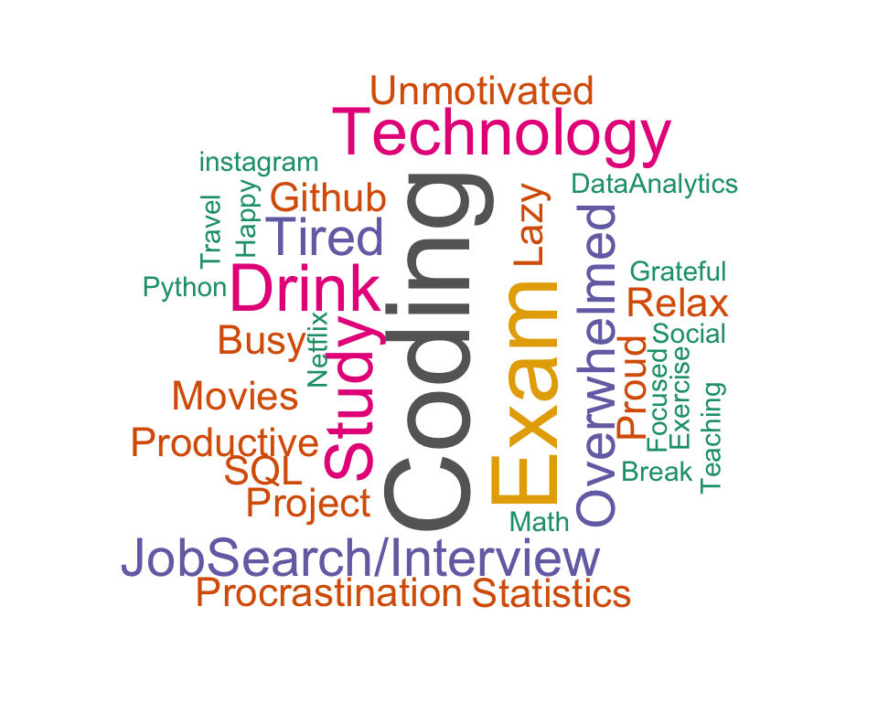
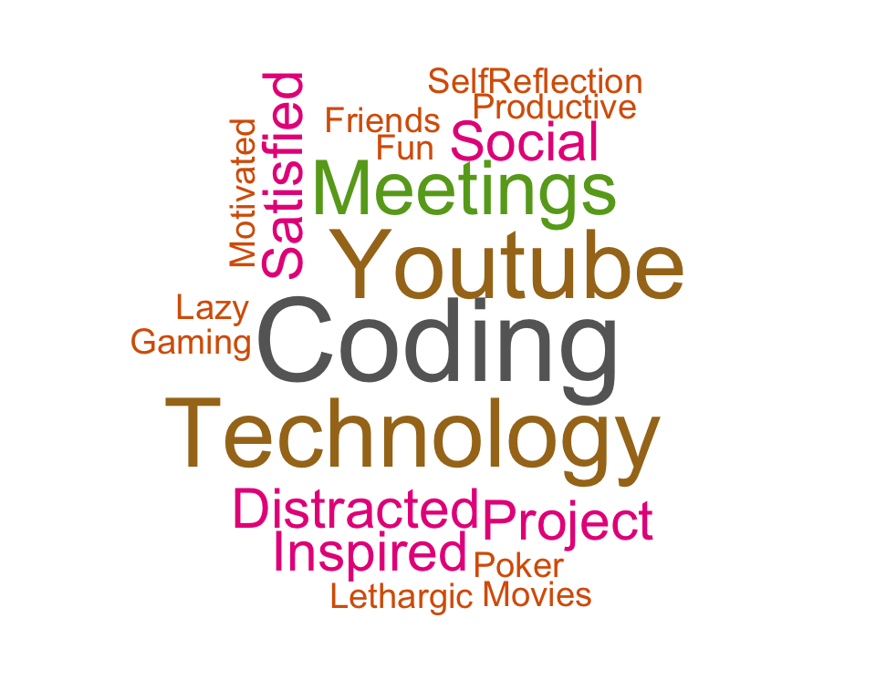
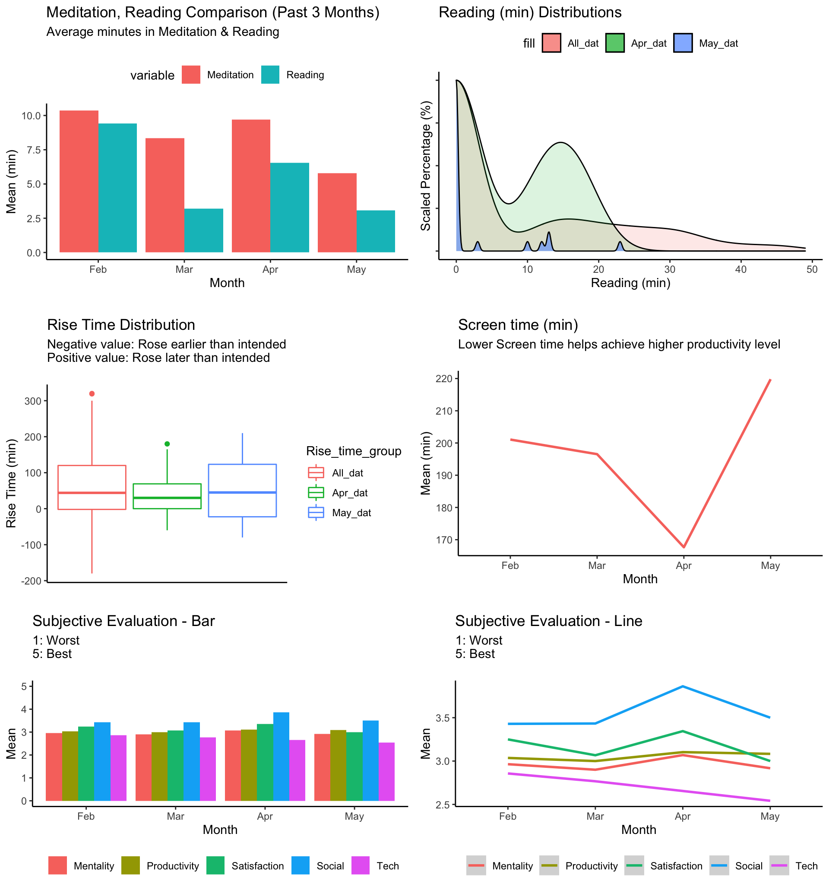
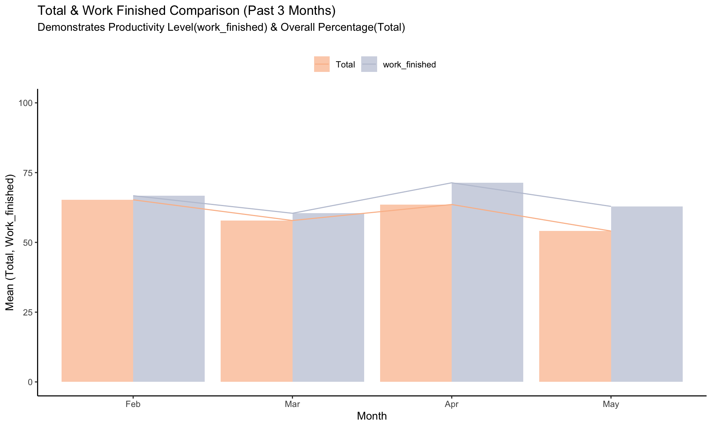

Monthly Evaluation
Andy
May 2022

World Cloud
wordcloud(words = words_dat$words, freq = words_dat$freq, min.freq = .01,
max.words=70, random.order=FALSE, rot.per=0.35,
colors=brewer.pal(8, "Dark2"))
Monthly Evaluation
month_dat <- all_dat %>%
filter(startsWith(Date, previous_month_str) == TRUE &
endsWith(Date, cur_year) == TRUE) %>%
mutate(Date = mdy(Date),
Tech = as.factor(Tech),
Productivity = as.factor(Productivity),
Satisfaction = as.factor(Satisfaction),
Social = as.factor(Social))
# merge morning_rt with all_dat
month_dat <- merge(month_dat, morning_rt,by="Date", all.x=T) %>%
select(-c(rise_time_min)) %>% # redundant
filter(!is.na(total_checked)) %>%
arrange(Date) %>%
tibble()
rmarkdown::paged_table(month_dat)Correlations
correlation_plot <- month_dat %>%
select(c(Screen_time, Drink, Meditation,
Reading, Rise_time, Multiple, work_finished,
night_phone, morning_phone))
pairs.panels(correlation_plot, lm = TRUE)
Visualizations
ggplot(data = month_dat, aes(x = Date, y = Total)) +
geom_line(aes(color = 'red')) +
geom_smooth(color = 'red', se=) +
theme(legend.position = "None") +
ylim(0,100) +
labs(title = paste0(month.abb[previous_month], ": Daily Total Trend"),
subtitle = paste0("Total AVG: ", as.character(round(mean(month_dat$Total), 2))))
Productivity
g1 <- ggplot(data = all_dat_modified) +
geom_bar(aes(x = Productivity, fill = Tech)) +
guides(fill=guide_legend(title="Tech Consumption\n1: Worst, 5: Best")) +
labs(title = "ALL Data: Productivity & Tech Consumption\n")
g2 <- ggplot(data = month_dat) +
geom_bar(aes(x = Productivity, fill = Tech)) +
guides(fill=guide_legend(title="Tech Consumption\n1: Worst, 5: Best")) +
labs(title = paste0(month.abb[previous_month], " Data: Productivity & Tech Consumption\n"))
grid.arrange(g1, g2, ncol = 2)
g1 <- ggplot(data = all_dat_modified) +
geom_smooth(aes(x = Screen_time, y = work_finished, color = Productivity),
se = F) +
labs(title = "ALL Data: Productivity & Tech Consumption")
g2 <- ggplot(data = month_dat) +
geom_smooth(aes(x = Screen_time, y = work_finished, color = Productivity),
se = F) +
labs(title = paste0(month.abb[previous_month], " Data: Productivity & Tech Consumption"))
grid.arrange(g1, g2, ncol = 2)